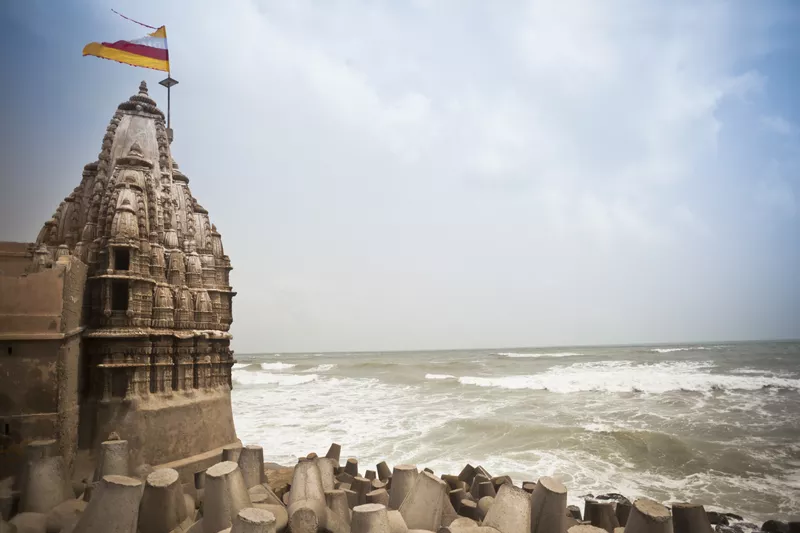

India Tourism
1. Sun Temple, Modhera
 The peaceful village of Modhera is home to one of the most significant sun temples in India. Built in the 11th century by Solanki dynasty rulers, it's dedicated to Surya the Sun God. The temple is a substantial structure, consisting of a carved stepped tank, assembly hall, and main shrine. It's covered in intricate stone sculptures. The sanctum is positioned in a way that it receives the first rays of the morning sun at the equinox.
The peaceful village of Modhera is home to one of the most significant sun temples in India. Built in the 11th century by Solanki dynasty rulers, it's dedicated to Surya the Sun God. The temple is a substantial structure, consisting of a carved stepped tank, assembly hall, and main shrine. It's covered in intricate stone sculptures. The sanctum is positioned in a way that it receives the first rays of the morning sun at the equinox.
Where : Northern Gujarat, 2 kilometers west of town towards the Pushpavati River, 25 kilometers from Mehsana and 100 kilometers from Ahmedabad.
2. Rani ki Vav (the Queen's Stepwell), Patan
 A UNESCO World Heritage Site, Rani ki Vav is an ancient abandoned stepwell dating back to the 11th century. It was also constructed during the Solanki dynasty, apparently in memory of ruler Bhimdev I, by his widowed wife. The stepwell has stairs going down seven levels, and panels containing more than 500 main sculptures and over 1,000 minor ones. Only discovered relatively recently, the stepwell was flooded by the nearby Saraswati River and silted over until the late 1980s. When it was excavated by the Archeological Survey of India, its carvings were found in pristine condition.
A UNESCO World Heritage Site, Rani ki Vav is an ancient abandoned stepwell dating back to the 11th century. It was also constructed during the Solanki dynasty, apparently in memory of ruler Bhimdev I, by his widowed wife. The stepwell has stairs going down seven levels, and panels containing more than 500 main sculptures and over 1,000 minor ones. Only discovered relatively recently, the stepwell was flooded by the nearby Saraswati River and silted over until the late 1980s. When it was excavated by the Archeological Survey of India, its carvings were found in pristine condition.
Where : Northern Gujarat. Patan is around 130 kilometers from Ahmedabad and 35 kilometers from Modhera.
3. Kutch Region
 The Kutch region of Gujarat is sometimes described as India's "wild west". This immense stretch of largely barren and harsh desert landscape apparently spans more than 40,000 square kilometers, and is one of the country's largest districts. Its name, Kutch (or Kachchh), refers to the fact that it alternates between wet (submerged during the monsoon season) and dry. Much of Kutch consists of seasonal wetlands known as the Great Rann of Kutch (famous for its salt desert) and smaller Little Rann of Kutch (famous for its Wild Ass Sanctuary). Other attractions in the Kutch region include historic Bhuj, villages and traditional handicrafts, the ship building in the port town of Mandvi, and the Dholavira ruins of an ancient Indus Valley Civilization/Harappan city. Find out more in this Kutch Travel Guide.
The Kutch region of Gujarat is sometimes described as India's "wild west". This immense stretch of largely barren and harsh desert landscape apparently spans more than 40,000 square kilometers, and is one of the country's largest districts. Its name, Kutch (or Kachchh), refers to the fact that it alternates between wet (submerged during the monsoon season) and dry. Much of Kutch consists of seasonal wetlands known as the Great Rann of Kutch (famous for its salt desert) and smaller Little Rann of Kutch (famous for its Wild Ass Sanctuary). Other attractions in the Kutch region include historic Bhuj, villages and traditional handicrafts, the ship building in the port town of Mandvi, and the Dholavira ruins of an ancient Indus Valley Civilization/Harappan city. Find out more in this Kutch Travel Guide.
Where : Northwest Gujarat. Bhuj is 340 kilometers west of Ahmedabad.
4. Dwarka

One of the four most sacred char dham Hindu pilgrimage sites and seven most ancient sapta puri religious cities in India, Dwarka is considered to be the ancient kingdom of Lord Krishna and the first capital of Gujarat. The Krishna Janmashtami festival is a major event there. Of special importance are Dwarkadhish Temple, built around 200 BC, and Jagat Mandir. Head down to Gomti Ghat, at the holy water's edge, for a spectacle of decorated camels, tea stalls, and seashell jewelery sellers.
Where : Western Gujarat, at the mouth of the Gomti River on the Arabian Sea, 130 kilometers west of Jamnagar and 300 kilometers west of Ahmedabad.
5. Marine National Park
 Isolated and off-the-beaten-track, Marine National Park lies along the coast on the way to Dwarka. It was established as a national park in 1982 and is the first of its kind in India. Yet, not many people know about it. The national park is made up of 42 islands, 33 of which are surrounded by coral reef, and is home to diverse marine and bird life. Tourists are only permitted to visit a couple of the islands though. The main one, Narara Island, is accessible by car and a long walk during low tide. Visit during the winter, and be prepared to wade through ankle deep water on the seabed. Local guides are available. Pirotan Island can be accessed by charter boat but it's difficult and permission needs to be obtained from numerous government departments in advance.
Isolated and off-the-beaten-track, Marine National Park lies along the coast on the way to Dwarka. It was established as a national park in 1982 and is the first of its kind in India. Yet, not many people know about it. The national park is made up of 42 islands, 33 of which are surrounded by coral reef, and is home to diverse marine and bird life. Tourists are only permitted to visit a couple of the islands though. The main one, Narara Island, is accessible by car and a long walk during low tide. Visit during the winter, and be prepared to wade through ankle deep water on the seabed. Local guides are available. Pirotan Island can be accessed by charter boat but it's difficult and permission needs to be obtained from numerous government departments in advance.
Where :Western Gujarat in the Gulf of Kutch, near Jamnagar.